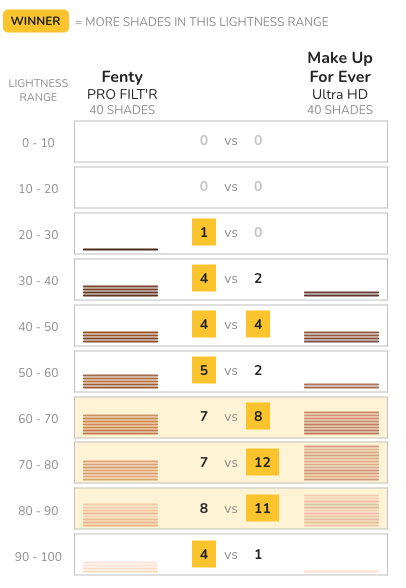
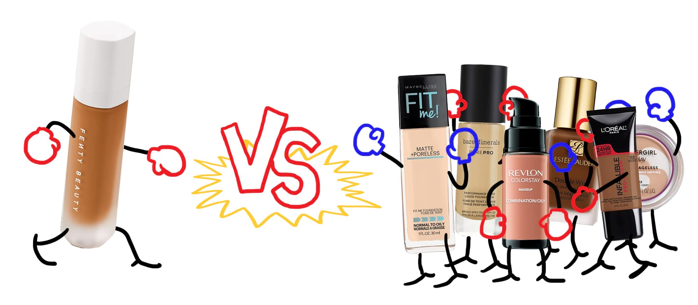
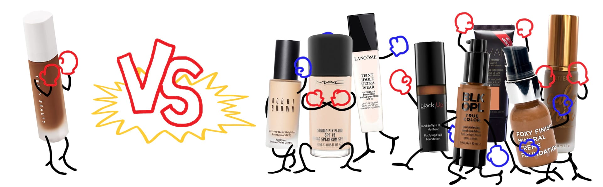
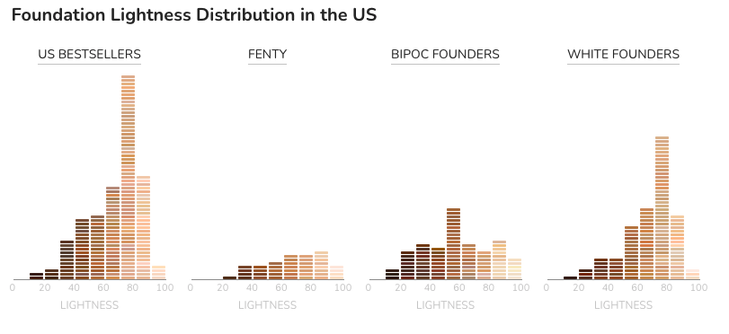
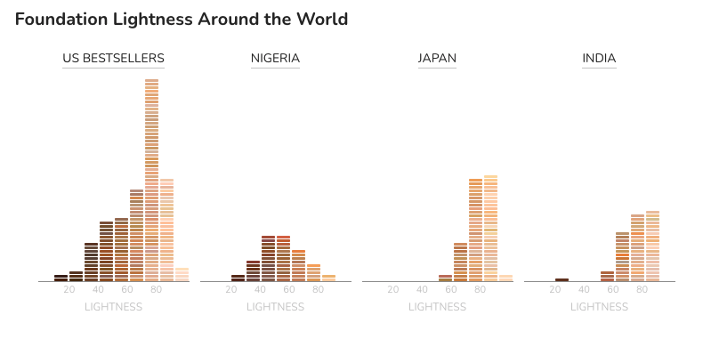

Let’s start in the US
Rihanna made headlines last fall when she launched Fenty Beauty, an intentionally inclusive makeup line created “so that women everywhere would be included.” Fenty’s liquid foundation product, Pro Filt’r, was so groundbreaking that it made it onto Time’s 25 Best Inventions of 2017 list. Its claim to fame: the foundation launched with 40 shades “made for women of all skin colors & undertones."
But as it turns out, a few other brands had 40 or more shades too, including Make Up For Ever, who was not about to let that fact go unnoticed. Shortly after Fenty’s launch, they challenged the newcomer in an Instagram post noting that 40 shades of foundation was “nothing new” since they’ve had 40 shades since 2015.
Rihanna was unimpressed. She quickly shot back with two comments: ‚Äúlol. still ashy ü§∑üèΩ‚Äç‚ôÄÔ∏è‚Äù and ‚Äúshook.‚Äù In other words, Rihanna was implying that Make Up For Ever‚Äôs foundation lacked range and would still leave people of color looking ‚Äúashy‚Äù or slightly gray.
So how valid is her comeback? Actually, there’s a way to find out—with data.
How we measure inclusivity in a line of foundations
- We recorded the hexadecimal color code used to represent every available shade for a product on each brand’s website.
- Using Photoshop, we extracted the lightness values (based on the CIE Lab color model) from each color.
- We plotted these lightness values to see whether a foundation line caters toward lighter or darker skin tones.
Important disclaimer
Our measurements are a rough proxy for inclusivity. How a liquid foundation changes when it’s applied, whether it’s effective across different undertones and skin types, and how it looks after a day of wear are factors we did not account for. So please keep in mind that these findings represent only one piece of a larger story.

Both Fenty’s Pro Filt’r and Make Up For Ever’s Ultra HD foundation offer 40 different shades. But how inclusive are these colors? By extracting the lightness value of the color swatches on each brand’s website, we can get a better idea of whether their shades are evenly distributed or not.
LIGHTNESS OF FOUNDATION SHADES
Fenty vs. Make Up For Ever

Grouping each brand’s shades by their lightness values, we see how the 40 shades are distributed.
By comparing the number of shades the two brands offer in each lightness range, we see where Fenty and Make Up For Ever shine.
Fenty’s Pro Filt’r foundation evenly supports a greater range of skin tones, excelling on both the darkest and lightest ends of the spectrum.
In contrast, 31 of Make Up For Ever’s 40 shades fall in the 60-90 lightness range, primarily catering to light and tanned skin tones.
In short, Rihanna was unimpressed by Make Up For Ever‚Äôs shade(s) and rightly so. üíÖüèΩ
Let’s Look at Some Bestsellers
Beyond Make Up For Ever, does Fenty’s claim to fame still stand when compared to the bestselling foundations in the US? For this, we combed through a handful of bestseller lists to come up with a list of six products that appeared at least twice.

The bestsellers are not doing so bad. Maybelline’s Fit Me Foundation stands out in particular for its breadth of coverage. This is no mere coincidence as they added 16 new, mostly darker shades in May 2017 (just a few months before Fenty’s launch), which gave them a grand total of 40 shades.
The leftmost three brands are as good as Fenty on the darker end of the spectrum (and Maybelline and L'Oréal actually cover the 10-20 lightness range that Fenty doesn’t!). Additionally, Fenty supports the lightest skin tones to a degree that is unparalleled among the bestsellers, which makes it a champion of inclusivity on both ends of the shade spectrum.
LIGHTNESS OF FOUNDATION SHADES
US bestsellers

What About BIPOC-Friendly Brands?
Despite the fact that Fenty’s darkest foundations flew off the shelves, many of the mainstream brands are still missing the mark for so many people across the country. So we decided to take a look at brands that are marketed to and recommended for BIPOC.
We then sampled their liquid foundation product line with the widest range of shades and used Fenty as a point of comparison.
Starting with BIPOC-recommended brands with white founders, we see that while MAC is a bit of a disappointment, Lancôme and Bobbi Brown both cover a good, wide range, much like some of the bestsellers we profiled above. Yet again, Fenty shines when it comes to the paler shades, which is probably why we see articles about how Fenty is not only good for people of color with darker skin tones, but for people with albinism as well.
Switching over to brands with BIPOC founders, we see that Fenty reigns here as the brand with the most number of shades. What’s interesting is that these BIPOC-created brands skew darker than every brand we’ve seen so far (including Fenty)—the densest, most consistent clustering of shades lie in the 50-60 lightness range. Additionally, there is solid support for the darkest skin tones: every brand has at least one product within the 10-30 lightness range.
In the US
Let’s combine all of the values for our bestsellers, BIPOC-friendly brands with white or BIPOC founders, and Fenty to get an overall view of the foundation landscape in the US.
- Fenty foundations have a wider range of shades than Make Up Forever.
- Many of the mainstream brands and Fenty have a wide assortment of shades for BIPOC.
- Very few brands support the darkest skin tone range (10 - 20 lightness). Fenty isn't one of them.
- If you have really light skin, Fenty or BIPOC-founded Beauty Bakerie have got you covered. Having 40 shades as a BIPOC-created brand really makes Fenty unique.
Around the world
Putting it all together, we can see how the bestsellers stack up in each of our 4 countries.
Given all of our data, here’s what we can say:
- US bestsellers have the largest total number of shades (i.e., the most resources).They might favor lighter skin tones, but they cover most of the shades across the spectrum.
- Nigerian beauty brands focus their efforts on primarily darker shades.
- Both Japanese and Indian beauty brands primarily cater to customers that have, on average, lighter skin than that of Americans
As for Fenty, the breadth of their foundation product holds up abroad (at least in comparison to these three countries). In that regard, Fenty’s shade selection is no different than the most inclusive US mainstream brands in having a large number of shades across a wide range.
Where Fenty does stand out is in their combination of product and marketing. Several articles have pointed out that Fenty kicked off a wave of social media marketing prominently featuring people of color. On top of that, Fenty’s bold campaign around “40 shades” has made the magic number a new sort of industry standard in the US: Dior, CoverGirl and Tarte are all following along with their own 40 shades of foundation.
But as we now know, not all 40 shades are alike.